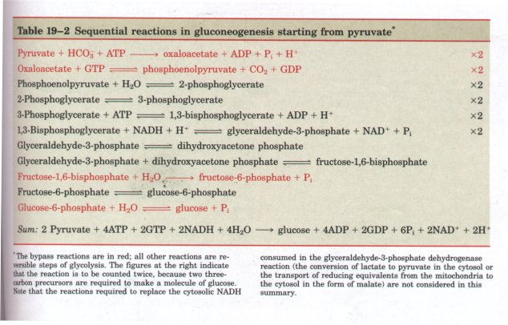
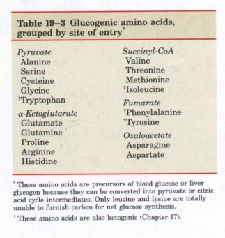
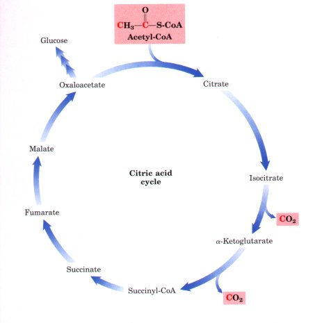
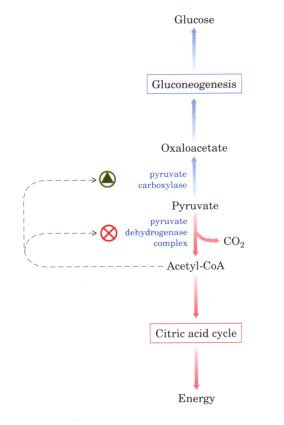
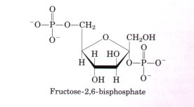
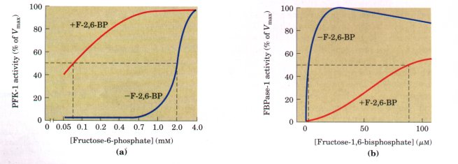
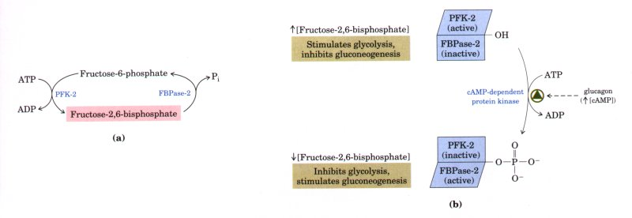
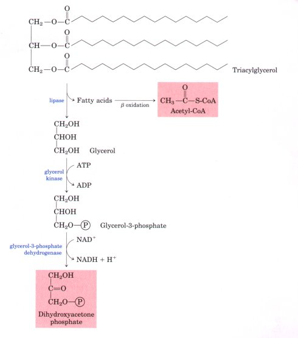
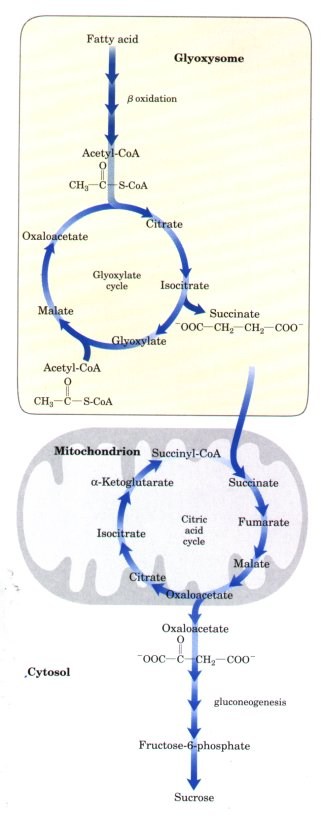

glucose + Pi ΔG°' = -13.8
kJ/mol
glucose + Pi ΔG°' = -13.8
kJ/molThe third bypass is the imal reaction of gluconeogenesis, the dephosphorylation of glucose-6-phosphate to yield free glucose (Fig. 19-2). Because the hexokinase reaction of glycolysis is irreversible (Table 19-1, step l ), the hydrolytic reaction is catalyzed by another enzyme, glucose-6-phosphatase:
Glucose-6-phosphate + H2O glucose + Pi ΔG°' = -13.8
kJ/mol
This Mg2+-dependent enzyme is found in the endoplasmic reticulum of hepatocytes. Glucose-6-phosphatase is not present in muscles or in the brain, and gluconeogenesis does not occur in these tissues. Instead, glucose produced by gluconeogenesis in the liver or ingested in the diet is delivered to brain and muscle through the bloodstream.
The sum of the biosynthetic reactions leading from pyruvate to free blood glucose (Table 19-2) is
2Pyruvate +4ATP +2GTP +2NADH +4H2O glucose +4ADP
+2GDP +6Pi +2NAD+ +2H+
For each molecule of glucose formed from pyruvate, six high-energy phosphate groups are required, four from ATP and two from GTP. In addition, two molecules of NADH are required for the reduction of two molecules of 1,3-bisphosphoglycerate. This equation is clearly not the simple reverse of the equation for the conversion of glucose into pyruvate by glycolysis, which yields only two molecules of ATP:
Glucose + 2ADP + 2Pi + 2NAD+ 2 pyruvate + 2ATP + 2NADH+
2H+ + 2H2O

Thus the synthesis of glucose from pyruvate is a relatively costly process. Much of this high energy cost is necessary to ensure that gluconeogenesis is irreversible. Under intracellular conditions, the overall free-energy change of glycolysis is at least -63 kJ/mol. Under the same conditions the overall free-energy change of gluconeogenesis from pyruvate is also highly negative. Thus glycolysis and gluconeogenesis are both essentially irreversible processes under intracellular conditions.
The biosynthetic pathway to glucose described above allows the net synthesis of glucose not only from pyruvate but also from the citric acid cycle intermediates citrate, isocitrate, α-ketoglutarate, succinate, fumarate, and malate. All may undergo oxidation in the citric acid cycle to yield oxaloacetate. However, only three carbon atoms of oxaloacetate are converted into glucose; the fourth is released as CO2 in the conversion of oxaloacetate to phosphoenolpyruvate by PEP carboxykinase (Fig. 19-3).

In Chapter 17 we showed that some or all of the carbon atoms of many of the amino acids derived from proteins are ultimately converted by mammals into either pyruvate or certain intermediates of the citric acid cycle. Such amino acids can therefore undergo net conversion into glucose and are called glucogenic amino acids (Table 19-3). Alanine and glutamine make especially important contributions in that they are the principal molecules used to transport amino groups from extrahepatic tissues to the liver. After removal of their amino groups in liver mitochondria, the carbon skeletons remaining (pyruvate and a-ketoglutarate, respectively) are readily funneled into gluconeogenesis.In contrast, there is no net conversion of even-carbon fatty acids into glucose by mammals because such fatty acids yield only acetylCoA on oxidative cleavage. Acetyl-CoA cannot be used as a precursor of glucose by mammals. The pyruvate dehydrogenase reaction is irreversible under intracellular conditions, and no other pathway exists by which acetyl-CoA can be converted into pyruvate. For every two carbons of acetate that enter the citric acid cycle, two carbons are lost as CO2 (Fig. 19-5); therefore, there can be no net conversion of acetate to oxaloacetate or pyruvate. However, fatty acids make an important contribution to gluconeogenesis in another way. Oxidation of fatty acids delivered to the liver during starvation provides much of the ATP and NADH needed to drive gluconeogenesis energetically.
At the three points where a glycolytic reaction is bypassed by a different type of enzymatic reaction in gluconeogenesis, simultaneous operation of both pathways would be wasteful. For example, phosphofructokinase-1 and fructose-1,6-bisphosphatase catalyze opposing reactions:
ATP + fructose-6-phosphate ADP +
fructose-1,6-bisphosphate + H+
Fructose-1,6-bisphosphate + H2O
fructose-6-phosphate + Pi
The sum of these two reactions is
ATP + H2O ADP + Pi + H+ + heat
an energy-wasting rection resulting in the hydrolysis of ATP without any net metabolic work being done. Clearly, if these two reactions were allowed to proceed simultaneously at a high rate in the same cell, a large amount of chemical energy would be dissipated as heat. Such an ATP-degrading cycle is called a futile cycle. A similar futile cycle could occur with the other two sets of bypass reactions.
Under normal circumstances futile cycles probably do not take place at a significant rate, because they are prevented by reciprocal regulatory mechanisms (as discussed below). However, futile cycling sometimes occurs physiologically to produce heat. For example, in cold weather bumblebees cannot fly until they have warmed their muscles to about 30 °C by futile cycling of fructose-6-phosphate and fructose1,6-bisphosphate and the consequent heat-generating hydrolysis of ATP.
To assure that futile cycling does not occur under normal circumstances, gluconeogenesis and glycolysis are regulated separately and reciprocally. The first control point occurs in the reactions catalyzed by the pyruvate dehydrogenase complex of glycolysis and pyruvate carboxylase of gluconeogenesis (Fig. 19-6); the latter enzyme requires the positive allosteric modulator acetyl-CoA for its activity. As a consequence, the biosynthesis of glucose from pyruvate is promoted only when excess mitochondrial acetyl-CoA builds up beyond the immediate needs of the cell for the citric acid cycle. When the cell's energetic needs are being met, oxidative phosphorylation slows, NADH accumulation inhibits the citric acid cycle, and acetyl-CoA accumulates. The increased concentration of acetyl-CoA inhibits the pyruvate dehydrogenase complex, slowing the formation of acetyl-CoA from pyruvate, and stimulates gluconeogenesis by activating pyruvate carboxylase. This allows excess pyruvate to be converted to glucose.
 The second control point in gluconeogenesis is the reaction catalyzed by fructose-1,6-bisphosphatase, which is strongly inhibited by AMP. The corresponding glycolytic enzyme, phosphofructokinase-1, is stimulated by AMP and ADP but inhibited by citrate and ATP, so that these opposing steps in the two pathways are regulated in a coordinated or reciprocal manner. When sufficient concentrations of acetylCoA or of the product of acetyl-CoA condensation with oxaloacetate (citrate) are present, or when a high proportion of the cell's adenylate is in the form of ATP, gluconeogenesis is favored, thus promoting formation of glucose and its storage as glycogen (described later). The special role of liver in maintaining a constant blood glucose level requires additional regulatory mechanisms to coordinate glucose production and consumption. When the blood glucose level decreases, the hormone glucagon signals the liver to produce and release more glucose. One source of glucose is glycogen stored in the liver; another source is gluconeogenesis. The hormonal regulation of glycolysis and gluconeogenesis in liver is mediated by fructose-2,6-bisphosphate, an allosteric effector for the enzymes phosphofructokinase-1 (PFK-1) and fructose-1,6-bisphosphatase (FBPase-1) (Fig. 19-7). When fructose-2,6-bisphosphate binds to its allosteric site on PFK-l, it increases that enzyme's afFmity for its substrate fructose-6-phosphate and reduces its affinity for the allosteric inhibitors ATP and citrate. Fructose-2,6-bisphosphate therefore activates PFK-1 and stimulates glycolysis in liver. Fructose-2,6bisphosphate also inhibits FBPase-l, thereby slowing gluconeogenesis. |
Fignre 19-5 Fatty acids with even-numbered chains of carbon atoms cannot be a source of carbon for the net synthesis of glucose in animals and microorganisms. Fatty acids are catabolized to acetyl-CoA, which enters the citric acid cycle. For every two carbons entering the cycle as acetyl-CoA, two carbons are lost as CO2, so there is no net production of oxaloacetate to support glucose biosynthesis by this path. However, fatty acid oxidation does provide extraordinary amounts of energy (in the form of NADH, ATP, and GTP) to support gluconeogenesis (Chapter 16). Amino acids that are degraded to acetyl-CoA are also not glucogenic (see Fig. 17-33), for the reason illustrated here.  Figure 19-6 Two alternative fates for pyruvate: conversion to glucose and glycogen via gluconeogenesis, or oxidation to acetyl-CoA for energy production. The first enzyme in each path is regulated allosterically; acetyl-CoA stimulates the activity of pyruvate carboxylase and inhibits the activity of the pyruvate dehydrogenase complex. |

Although structurally related to fructose-1,6-bisphosphate, fructose-2,6-bisphosphate is clearly not an intermediate in gluconeogenesis or glycolysis; it is a regulator whose cellular level reflects the level of glucagon in the blood (see below), which in turn varies with the blood glucose level. Because fructose-2,6-bisphosphate is effective at low concentrations (in the micromolar range), very little fructose is diverted from metabolic pathways for its synthesis.

Fignre 19-7 The opposite effects of fructose-2,6-bisphosphate (F-2,6-BP) on the enzymatic activities of phosphofructokinase-1 (PFK-1, a glycolytic enzyme) and fructose-1,6-bisphosphatase-1 (FBPase-1, an enzyme of gluconeogenesis). (a) PFK-1 activity in the absence of fructose-2,6-bisphosphate (blue curve) is half maximal when the concentration of the substrate fructose-6-phosphate is 2 mM (that is, K0.5 = 2 mM; recall from Chapter 8 that K0.5 or Km is equivalent to the substrate concentration at which half maximal enzyme activity occurs). When 0.13 μM fructose-2,6-bisphosphate is present (red curve), the K0.5 for fructose-6-phosphate is only 0.08 μM. Thus fructose-2,6-bisphosphate activates PFK-1 by increasing its apparent aflinity (p. 216) for fructose-6-phosphate. (b) FBPase-1 activity is inhibited by as little as 1 μM fructose-2,6-bisphosphate and is strongly inhibited by 25 NμM. In the absence of this inhibitor (blue curve) the K0.5 for the substrate fructose-1,6-bisphosphate is 5 μM, but in the presence of 25 μM fructose-2,6-bisphosphate (red curve) the K0.5 is > 70 μM. Fructose-2,6-bisphosphate also makes this enzyme more sensitive to inhibition by another allosteric regulator, AMP.
The cellular concentration of fructose-2,6-bisphosphate is set by the relative rates of its formation and breakdown. Fructose-2,6-bisphosphate is formed by phosphorylation of fructose-6-phosphate, catalyzed by phosphofructokinase-2 (PFK-2), and is broken down by fructose-2,6-bisphosphatase (FBPase-2) (Fig. 19-8). (Note that these enzymes are distinct from PFK-1 and FBPase-l, which catalyze the formation and breakdown, respectively, of fructose-1,6-bisphosphate.) PFK-2 and FBPase-2 are two distinct enzymatic activities, but both are part of a single, bifunctional protein. The balance of these two activities in the liver, and therefore the cellular level of fructose-2,6-bisphosphate, is regulated by glucagon. Glucagon stimulates adenylate cyclase, an enzyme that synthesizes 3',5'-cyclic AMP (cAMP) from ATP (see Fig. 14-18). Cyclic AMP in turn stimulates a cAMP-dependent protein kinase, which transfers a phosphate group from ATP to the bifunctional protein PFK-2/FBPase-2 (Fig. 19-8). Phosphorylation of this protein enhances its FBPase-2 activity and inhibits PFK-2. Glucagon thereby lowers the cellular level of fructose-2,6-bisphosphate, inhibiting glycolysis and stimulating gluconeogenesis. The resulting production of more glucose enables the liver to replenish blood glucose in response to glucagon.

Figure 19-8 (a) The cellular concentration of the regulator fructose-2,6-bisphosphate is determined by the rates of its synthesis by phosphofructokinase-2 (PFK-2) and breakdown by fructose-2,6bisphosphatase (FBPase-2). (b) Both of these enzymes are part of the same polypeptide chain, and both are regulated, in a reciprocal fashion, by glucagon. Here and elsewhere arrows are used to indicate increasing (T) and decreasing (,l) levels of metabolites.
Gluconeogenesis Converts Fats and Proteins to Glucose in Germinating SeedsMany plants store lipids and proteins in their seeds, to be used as sources of energy and biosynthetic precursors during germination, before photosynthetic mechanisms can supply both. Active gluconeogenesis occurs in germinating seeds, providing glucose for the synthesis of polysaccharides and many metabolites derived from hexoses, and for the production of sucrose (the transport form of carbon in plants). |
 Figure 19-9 Triacylglycerols stored in seeds are oxidized to acetyl-CoA and dihydroxyacetone phosphate during germination; both are substrates for gluconeogenesis in plants. Recall that acetyl-CoA is not a substrate for gluconeogenesis in animals (Fig. 19-5 ). |
Unlike animals, plants can convert acetyl-CoA derived from fatty acid oxidation into glucose. Triacylglycerols are converted into glucose by the combined action of the β-oxidation pathway (Chapter 16), the glyoxylate cycle (Chapter 15), and gluconeogenesis. Hydrolysis of storage triacylglycerols produces glycerol-3-phosphate, which can enter the gluconeogenic pathway after its oxidation to dihydroxyacetone phosphate (Fig. 19-9). Fatty acids, the other product of lipolysis, are activated, then oxidized to acetyl-CoA in glyoxysomes by isozymes of the β-oxidation pathway (Fig. 19-10). The separation of this process from the citric acid cycle, the enzymes of which are in mitochondria but not glyoxysomes, prevents the further oxidation of acetyl-CoA to CO2.Instead, the acetyl-CoA is converted, via the glyoxylate cycle, into succinate. Succinate passes to the mitochondrial matrix, where it is converted by citric acid cycle enzymes into oxaloacetate, which passes out of the mitochondrion and into the cytosol. Cytosolic oxaloacetate is converted by gluconeogenesis to fructose-6-phosphate, the precursor to sucrose. Thus, the integration of reaction sequences occurring in three subcellular compartments is required for the production of fructose-6phosphate or sucrose from stored lipids. About 75% of the carbon in the stored lipids of seeds is converted into carbohydrate by this means; the other 25% is lost as CO2 in the conversion of oxaloacetate to phosphoenolpyruvate. Amino acids derived from the breakdown of stored seed proteins also yield precursors for gluconeogenesis. They are deaminated and oxidized, via pathways discussed in Chapter 17, to succinyl-CoA, pyruvate, oxaloacetate, fumarate, and α-ketoglutarate-all good starting materials for gluconeogenesis. |
 Figure 19-10 The conversion of stored fatty acids to sucrose in germinating seeds begins in glyoxysomes, which produce succinate and export it to mitochondria. There it is converted to oxaloacetate by enzymes of the citric acid cycle. Oxaloacetate enters the cytosol and serves as the starting material for gluconeogenesis and the synthesis of sucrose, the transported sugar in plants. |